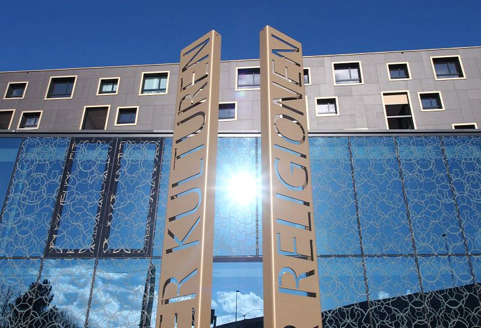

Das Haus der Religionen liegt abseits der üblichen Touristenrouten Berns am Europaplatz zwischen der Kernstadt und dem multikulturellen Berner Westen. Es fällt zunächst die dekorative Glasfassade auf. Zum Eintreten laden nicht nur die Kultusräume einzelner Religionen ein. Im Dialogbereich organisiert das Haus der Religionen vielfältige Veranstaltungen wie Tagungen, Dialogveranstaltungen, Tage der offenen Tür und regelmässige Aktivitäten. So ist das Haus der Religionen mehr als ein öffentliches Gebäude für bestimmte Religionsgemeinschaften. Es schafft auch im übertragenen Sinn den Raum für Begegnungen von Menschen verschiedener Religionen und Kulturen unter einem Dach.
Der Eingangsbereich zum Haus der Religionen am Europaplatz. (Bild: Stefan Maurer)
Anfänge
Bis zur Eröffnung des Gebäudes im Dezember 2014 mussten allerdings viele Engagierte und Unterstützer zusammenkommen. Ein Stadtentwicklungskonzept und die Einrichtung einer Stelle für Friedensarbeit durch die Herrnhuter Brüdergemeine gaben schliesslich den Anstoss, eine Projektgruppe aus dem Berner Runden Tisch der Religionen zu bilden. Auf die Gründung des Vereins «Haus der Religionen – Dialog der Kulturen» 2002 folgten konkrete Verhandlungen und auch erste Erprobungen eines gemeinsam genutzten Raumes. Der Verein organisierte zugleich die Gelder für den Bau des vom Haus der Religionen genutzten Gebäudeteils gemeinsam mit der 2006 gegründeten Stiftung «Europaplatz – Haus der Religionen». Beim Spatenstich im Juni 2012 war das Konzept für die Betreibung und Nutzung der Räume bereits entwickelt. Kunstmuseum ausgestellt sind.
Kulträume und Dialogbereich
Besuchern eröffnet sich zunächst der Dialogbereich hinter der Pförtnerloge mit dem tamilisch-ayurvedischen Restaurant im Erdgeschoss. Eine mit Holz verkleidete Treppe führt in die obere Etage, wo sich ein Konferenzraum und Büros befinden. In beiden Etagen können jeweils Bereiche für Vorträge abgetrennt werden. Die Wände sind weiss und licht gehalten und zum Teil mit Holz verkleidet. Im Dialogbereich finden die Veranstaltungen der interreligiösen und interkulturellen Begegnungen statt, die vom Verein verantwortet werden. Die Kultusräume der Religionen haben jeweils einen Zugang über den Dialogbereich und auch einen eigenen Eingang. Für die Innenausstattung der Räume kommen die jeweiligen Religionsgemeinschaften selbst auf. Im Erdgeschoss befindet sich im Südosten die Moschee, im Nordosten der Meditationsraum der buddhistischen Gemeinschaft und im Westen der hinduistische Tempel. Im Obergeschoss ist im Osten die christliche Kirche und im Westen die alevitische Dergâh. Ausserdem befinden sich im Obergeschoss drei Vitrinen mit Kultobjekten der Baha’i, Sikh und Juden, die das Haus der Religionen mittragen, aber keinen Kultraum im Haus der Religionen benötigen. Bei öffentlichen Veranstaltungen sowie auf Anfrage sind Führungen durch die Räume der Religionsgemeinschaften möglich, die vom Verein verantwortet und auf der Webseite veröffentlicht werden. Für den laufenden Betrieb im Dialogbereich wirbt der Verein weiterhin Spenden ein und lädt zum ehrenamtlichen Engagement ein.
Neben- und Miteinander
Mit seinem sowohl multireligiösen als auch interreligiösen Konzept unterscheidet sich das Berner Haus der Religionen von den meisten anderen Gebäuden, in denen mehrere Religionen praktiziert werden. Der Kunsthistoriker Johannes Stückelberger beschreibt diesen Typus als «Neben- und Miteinander», in Unterscheidung von anderen interreligiös genutzten Orten. Weder wurde hier ein vormals christlicher Raum auch für andere Religionen geöffnet (Typus «Füreinander»), noch bestimmen wechselnde Nutzer mit ihren Ritualobjekten den jeweiligen Charakter des sonst neutralen oder multireligiösen Raumes (Typus «Miteinander»). Vielmehr haben die Verantwortlichen in Bern sich auf langwierige gegenseitige Aushandlungsprozesse für die Gestaltung des interreligiösen Miteinanders eingelassen und zugleich Freiraum für ein religionsplurales Nebeneinander geschaffen.
Von der Schweiz nach Sri Lanka
Dies strahlt innerhalb der Schweiz und weit über die Landesgrenzen hinaus: Die Presse berichtet nicht nur in der Schweiz, in Österreich und Deutschland darüber, sondern auch in Italien, England, der Türkei und Sri Lanka. Das Team vom Haus der Religionen wird zu Tagungen im In- und Ausland geladen und berät andere Projekte. Und auch aus dem Haus der Religionen selbst erwächst Neues: So entstand dort im Laufe der Zeit aus Distanziertheit eine Freundschaft zwischen dem hinduistischen Priester und dem Präsidenten des buddhistischen Vereins, die jeweils den Konfliktparteien auf Sri Lanka angehören. Beide haben nun gemeinsam mit Vertretern von Christentum und Islam einen gemeinsamen Verein auf Sri Lanka gegründet mit dem Ziel, auch dort ein Haus der Religionen nach dem Modell von Bern zu gründen und so eine friedliche Begegnung von Menschen verschiedener Religionen zu fördern.
Dr. Anna-Konstanze Schröder war PostDoktorandin in der Arbeitsgruppe Empirische Religionsforschung an der Universität Bern.
Weitere Artikel von {{author.author}} finden Sie hier:
Zur Vertiefung:
- www.bern-haus-der-religionen.ch
- Haus der Religionen (Hg.): Gegenwärtig, noch nicht fertig. Haus der Religionen – Dialog der Kulturen, Bern 2012.